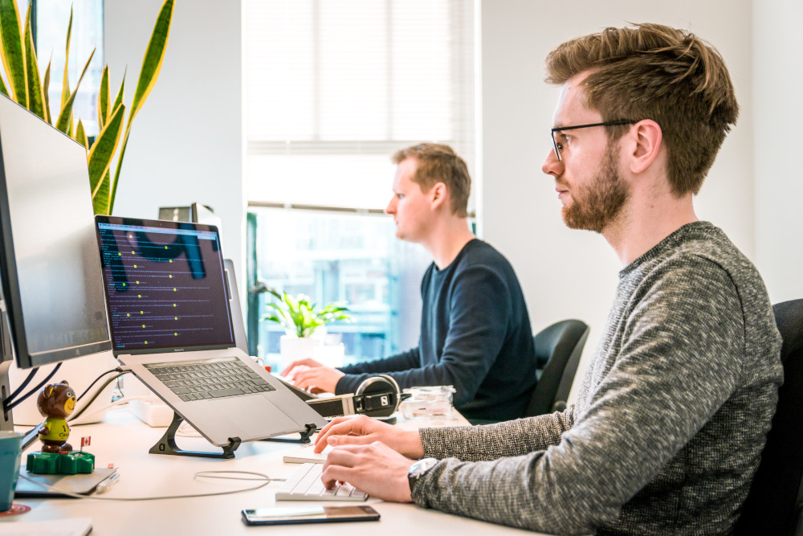

Робота в офісі: затишно та нелегко
Та повернемося до офісної роботи. Окрім болю в спині чи очах від тривалого споглядання монітору, сучасні офісні працівники таки мають на що поскаржитися. Нещодавно експерти навіть змоделювати приблизний вигляд типового офісного працівника на основі врахування ряду проблем із здоров'ям, що виникають при тривалій роботі сидячи. Це вийшов вельми сумний манекен із згорбленою спиною, набряклими ногами та червоними очима.
Комфорт робочого простору не менш важливий, аніж комфорт власного житла, адже нерідко працівники можуть проводити там стільки ж, а то й більше часу, ніж вдома. Тому належне облаштування побуту в офісі впливає на бажання працівників приходити на роботу, ефективно працювати і цінувати свого роботодавця.
Згідно із одними із опитувань 2014 року, половина офісних працівників вважає свою роботу психологічно виснажуючою (нервовою). Серед скарг-"лідерів" – напружена атмосфера в колективі, незручні робочі меблі та шум. Окрім цього, близько четвертої частини співробітників дошкуляють протяги та холод від кондиціонеру, та ще стільком же в офісі надто душно.
У відповідь на стрес доводиться не "бити або тікати", як кажуть нам наші інстинкти із минулого, а посміхатися та зберігати красиве положення тіла. Гормони стресу, які змушують наше серце прискорюватися, а процес травлення пригнічуватися, не зустрічають належної реакції (ніхто нікуди не тікає) і це може порушувати рівновагу функціонування та взаємодії симпатичної та парасимпатичної нервової системи.
Робота: не вовк – не втече, вона сидяча
Сидячий спосіб життяпов'язанийіз підвищенням ризиків виникнення проблем із зайвою вагою та діабету другого типу.
Сидіння викликає втому м'язів шиї і спини, погіршення кровооббігу, особливо – у ділянці тазу, та негативні зміни у функціонуванні легень та погіршення якості сну.
Окрім того, із тривалим сидінням пов'язані підвищені ризики виникнення онкозахворювань кишківника, ендометрію та молочної залози.
Постава: не завжди королівська
Тривале сидіння неминуче пов'язано із порушеннями постави – ми горбимося і нахиляємося ближче до монітору, щоб ліпше розгледіти осоружний графік, а стомлену голову намагаємося підперти рукою.
Як наслідок – біль в шиї, спині та плечах, погіршення функціонування деяких суглобів, утруднення дихання та навіть важкість у перетравленні їжі!
Додавати неприємностей можуть ще й незручні меблі.
Очі: втомлені та червоні
Неправильна постава у положенні сидячи – це ще і ризики, пов'язані із погіршенням зору. Надто близьке розташування монітору призводить до напруги в очах. А ще – ми захоплюємося предметом своєї роботи настільки, що забуваємо моргати і рогівка ока при цьому пересихає. Цьому сприяє і постійно сухе повітря в офісних приміщеннях.
Повітря: сухе і не завжди свіже
У переважній більшості випадків повітря в офісах надто сухе. Для техніки може воно й нічого, однак для шкіри, рогівки очей та слизових оболонок дихальних шляхів добряче відчутно. І хоч у нас немає спеціальних рецепторів, які нам підказали б що повітря таки сухе, навіть без гігрометра ми здатні відчувати брак вологості по мірі виникнення дискомфорту. Покашлювання, подразнення та сухість шкіри та очей – найпоширеніші ознаки того, що повітря надто сухе.
Вентиляція: спроектована надто економно
Системи вентиляції більшості офісних приміщень мають недостатню кількість дифузорів (власне точок надходження повітря). Відповідно для забезпечення належного повітрообміну повітря має рухатися інтенсивніше, то ж виникає протяг. Очікувано, що працівник, який знаходитиметься найближче, буде скаржитися на дискомфорт і докладатиме зусиль, щоб його позбутися – наприклад, перемкне режим вентилятора на слабший режим. При цьому йому все одно "дутиме", а колегам, що сидять трохи далі, свіжого повітря постійно не вистачатиме. Недостатня вентиляція спричинює брак кисню та надлишок вуглекислого газу, що виливається у слабку продуктивність, відчуття слабкості та втоми і головні болі.
Для керівництва ж важливо розуміти, що паршива вентиляція може запросто корелювати із частотою лікарняних та, відповідно, із потенційними збитками.
Зволожувачі та кондиціонери: необхідна належна гігієна
За нашими доволі скромними підрахунками, близько половині офісних співробітників доводиться вступати в суперечки із колегами через надто інтенсивну чи навпаки недостатню роботу кондиціонеру. Із цієї точки зору, проблема схожа, як із вентиляцією – комусь ближче, комусь далі. Тут важливо розуміти, що на відміну від протягу з вікна, який може бути то сильнішим, то слабшим і різної температури, повітря, що йде з кондиціонеру, очікувано має дещо нижчу температуру, ніж ми задаємо на самому приладі. Потік повітря стабільний і постійний, тому інтенсивність такого впливу може бути доволі значною.
Кондиціонери можуть ставати джерелом поширення інфекції, особливо, якщо вчасно не змінювати фільтри. Те ж саме стосується зволожувача повітря – слід обов'язково ознайомитися із правилами експлуатації та очищувати місткість та фільтр не рідше, ніж рекомендовано. Також слід наливати туди лише чисту питну воду і ніяких сторонніх речовин.
Колеги: про дрібні звички та великі розчарування
Перебування під одним дахом великої кількості людей та ще й з різними звичками неминуче веде до порушення особистого простору один одного та спірних уявлень про комфорт. Починаючи із перемикання режиму кондиціонеру, закінчуюючи гучною мелодією на телефоні – людський фактор є невід'ємним у переліку розчарувань офісних співробітників.
Ось найпопулярнішіскарги працівників на один одного:
- Гучні особисті розмови по телефону;
- Надто різкі та інтенсивні парфуми;
- Тютюнопаління та неприємний запах (а в курців часто погіршений нюх і вони навіть запах власного поту можуть не ідентифікувати);
- Звичка їсти на робочому місці;
- Звичка вмикати музику чи переглядати відео без навушників;
- Гучний неприємний звінок на телефоні;
- Звичка не прибирати за собою на кухні;
- Звичка голосно видувати ніс;
- Знаходження на робочому місці, будучи хворим та заражаючи своїх колег.
Як стати свідком покращення: боротьба за дзен
Поради покращення тут можуть виглядати цілком очевидно.
- Вживати заходів, аби рухатися більше: робити рухові паузи; використовуйте таймер чи мобільні додатки, які нагадують вам про необхідність зробити паузу; замість надсилання листів колегам, підійдіть до них і обговоріть питання, коли це можливо; паркуйтеся по периметру парковки – це гарна можливість для зайвої сотні кроків; використовуйте обідню перерву для прогулянки. Гарним рішенням, що вже набуло чималої популярності, є столи із регульованою висотою – таким чином можна її змінювати і якийсь час працювати стоячи, а не сидячи; популярним заходом, який використовують деякі компанії, є проведення робочих нарад стоячи – це дає можливість порухатися і заодно скорочує їх тривалість;
- Свідомо слідкуйте за поставою – за певний час це стане звичкою. Комфортні меблі цьому сприяють. Подбайте про зручне крісло. Якщо Ви той, від кого залежить облаштування офісу – це гарна інвестиція в комфорт ваших співробітників, та бажання залишатися надалі у вашій компанії.
- Робіть паузи не лише для того, щоб порухатися, але й для невеличкої гімнастики для очей. Вона допоможе очам відпочити та запобігатиме зайвому пересиханню рогівки. Таймер чи спеціальні додатки тут також можуть бути в нагоді;
- Нехай в офісі на видному місці буде гігрометр і його показники будуть в межах 40-60%. Підтримувати ці цифри допоможе зволожувач повітря. Але не забувайте його регулярно очищувати, аби він не ставав джерелом забруднення повітря. Ніколи не додавайте у воду для зволожувача ніяких сторонніх чи ароматичних речовин – це може бути фактором ураження легень;
- Уникайте користування кондиціонером, коли без цього можна обійтися. Слідкуйте за режимом його очищення та вчасної зміни фільтрів;
- Тримайте свій телефон на тихому режимі та не змушуйте колег слухати ваші особисті розмови; користуйтеся навушниками, навіть в обідню перерву, якщо раптом вирішили надихнутися якоюсь піснею чи закортіло подивитися новий випуск "клятого раціоналіста" чи "цікавої науки" (так, це нативна реклама, підпишіться – реально круті канали ));
- Не їжте на робочому місці! По-перше, залишки їжі потрапляють на оргтехніку та забруднюють її та навіть можуть виводити з ладу, по-друге, таким чином ви створюєте середовище не лише для перенесення, а й для розмноження потенційно патогенних бактерій, по-третє, звуки та запахи, що супроводжують прийом їжі за робочим столом, не сприяють покращенню вашої репутації, по-четверте, це формує нездорову харчову поведінку та може сприяти набору маси, а по-п'яте, ви просто позбавляєте таким чином себе можливості зайвий раз порухатися і пройтися до кухні. Не забувайте ВІДРАЗУ прибирати за собою;
- Киньте палити чи зробіть по максимуму так, аби колегам не довелося затамовувати подих, як тільки вони вас бачать. Якщо ви палите, то ймовірно, що ваш нюх може бути послабленим, слідкуйте за чистотою власного тіла, але не зловживайте парфумами! Незле прямо спитати когось, чи не зарізкі ваші парфуми, бо колеги навряд чи вам про це самі скажуть, натомість триматимуться на відстані і "прохолодно" спілкуватимуться.
- Залишайтеся вдома, коли хворієте. Не змушуйте колег слухати ваш кашель, шморгання та хворіти слідом за вами. Вважаєте це дрібницями? У колег вдома ймовірно є діти, вагітні дружини чи літні батьки, у яких навіть звичайне ГРЗ може проходити значно важче, тому не даруйте їм таких подарунків.
- Не соромтеся говорити про свої потреби та незручності, життя одне, здоров'я – найцінніше, а місць роботи багато.

Photo by Tim van der Kuip on Unsplash